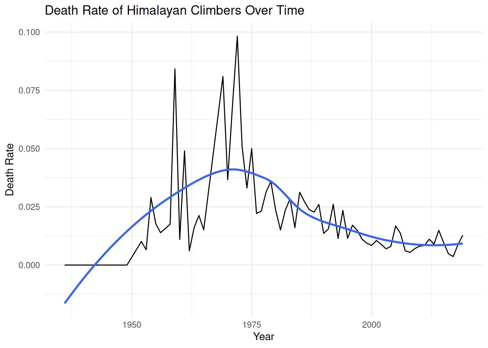
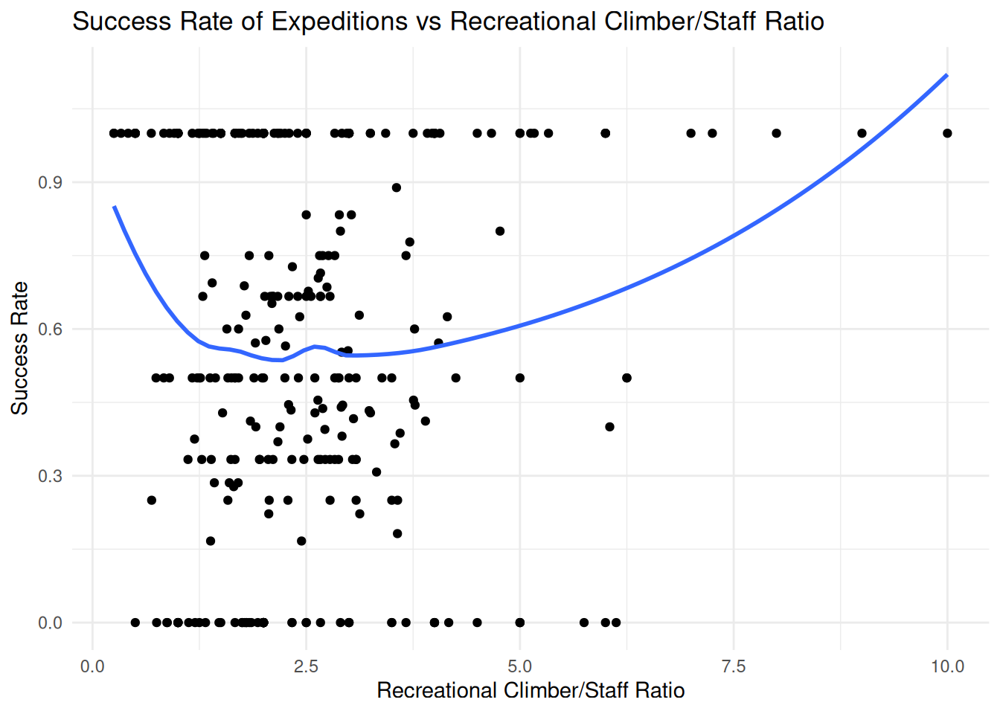
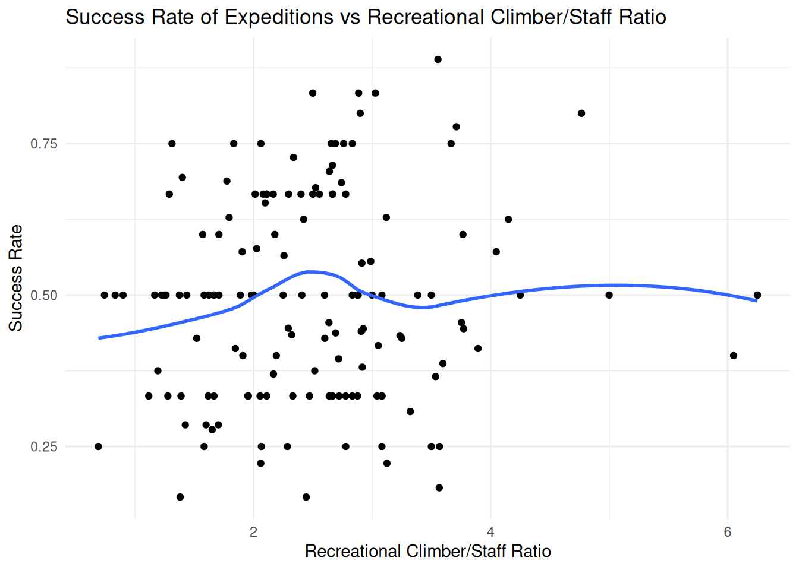

con_exp <- DBI::dbConnect(duckdb::duckdb(), dbdir = "exp_db")Project 2
—————————————————————————
Accessing data
We will be considering the Himalayan Climbing Expedition datasets available on GitHub. Himalayan Expedition Datasets
Create the connection
Read in the raw data from Github
members <- readr::read_csv('https://raw.githubusercontent.com/rfordatascience/tidytuesday/main/data/2020/2020-09-22/members.csv')Rows: 76519 Columns: 21
── Column specification ────────────────────────────────────────────────────────
Delimiter: ","
chr (10): expedition_id, member_id, peak_id, peak_name, season, sex, citizen...
dbl (5): year, age, highpoint_metres, death_height_metres, injury_height_me...
lgl (6): hired, success, solo, oxygen_used, died, injured
ℹ Use `spec()` to retrieve the full column specification for this data.
ℹ Specify the column types or set `show_col_types = FALSE` to quiet this message.expeditions <- readr::read_csv('https://raw.githubusercontent.com/rfordatascience/tidytuesday/main/data/2020/2020-09-22/expeditions.csv')Rows: 10364 Columns: 16
── Column specification ────────────────────────────────────────────────────────
Delimiter: ","
chr (6): expedition_id, peak_id, peak_name, season, termination_reason, tre...
dbl (6): year, highpoint_metres, members, member_deaths, hired_staff, hired...
lgl (1): oxygen_used
date (3): basecamp_date, highpoint_date, termination_date
ℹ Use `spec()` to retrieve the full column specification for this data.
ℹ Specify the column types or set `show_col_types = FALSE` to quiet this message.peaks <- readr::read_csv('https://raw.githubusercontent.com/rfordatascience/tidytuesday/main/data/2020/2020-09-22/peaks.csv')Rows: 468 Columns: 8
── Column specification ────────────────────────────────────────────────────────
Delimiter: ","
chr (6): peak_id, peak_name, peak_alternative_name, climbing_status, first_a...
dbl (2): height_metres, first_ascent_year
ℹ Use `spec()` to retrieve the full column specification for this data.
ℹ Specify the column types or set `show_col_types = FALSE` to quiet this message.glimpse(peaks)Rows: 468
Columns: 8
$ peak_id <chr> "AMAD", "AMPG", "ANN1", "ANN2", "ANN3", "AN…
$ peak_name <chr> "Ama Dablam", "Amphu Gyabjen", "Annapurna I…
$ peak_alternative_name <chr> "Amai Dablang", NA, NA, NA, NA, NA, NA, NA,…
$ height_metres <dbl> 6814, 5630, 8091, 7937, 7555, 7525, 8026, 8…
$ climbing_status <chr> "Climbed", "Climbed", "Climbed", "Climbed",…
$ first_ascent_year <dbl> 1961, 1953, 1950, 1960, 1961, 1955, 1974, 1…
$ first_ascent_country <chr> "New Zealand, USA, UK", "UK", "France", "UK…
$ first_ascent_expedition_id <chr> "AMAD61101", "AMPG53101", "ANN150101", "ANN…summary(peaks) peak_id peak_name peak_alternative_name height_metres
Length:468 Length:468 Length:468 Min. :5407
Class :character Class :character Class :character 1st Qu.:6236
Mode :character Mode :character Mode :character Median :6560
Mean :6657
3rd Qu.:6911
Max. :8850
climbing_status first_ascent_year first_ascent_country
Length:468 Min. : 201 Length:468
Class :character 1st Qu.:1963 Class :character
Mode :character Median :1982 Mode :character
Mean :1979
3rd Qu.:2008
Max. :2019
NA's :132
first_ascent_expedition_id
Length:468
Class :character
Mode :character
# Nothing seems like it needs to be removed.glimpse(expeditions)Rows: 10,364
Columns: 16
$ expedition_id <chr> "ANN260101", "ANN269301", "ANN273101", "ANN278301",…
$ peak_id <chr> "ANN2", "ANN2", "ANN2", "ANN2", "ANN2", "ANN2", "AN…
$ peak_name <chr> "Annapurna II", "Annapurna II", "Annapurna II", "An…
$ year <dbl> 1960, 1969, 1973, 1978, 1979, 1980, 1980, 1981, 198…
$ season <chr> "Spring", "Autumn", "Spring", "Autumn", "Autumn", "…
$ basecamp_date <date> 1960-03-15, 1969-09-25, 1973-03-16, 1978-09-08, NA…
$ highpoint_date <date> 1960-05-17, 1969-10-22, 1973-05-06, 1978-10-02, 19…
$ termination_date <date> NA, 1969-10-26, NA, 1978-10-05, 1979-10-20, 1980-0…
$ termination_reason <chr> "Success (main peak)", "Success (main peak)", "Succ…
$ highpoint_metres <dbl> 7937, 7937, 7937, 7000, 7160, 7000, 7250, 6400, 740…
$ members <dbl> 10, 10, 6, 2, 3, 6, 7, 19, 9, 5, 5, 5, 6, 4, 3, 4, …
$ member_deaths <dbl> 0, 0, 0, 0, 0, 1, 0, 0, 1, 0, 1, 0, 0, 0, 0, 0, 0, …
$ hired_staff <dbl> 9, 0, 8, 0, 0, 2, 2, 0, 3, 0, 0, 3, 4, 2, 0, 2, 5, …
$ hired_staff_deaths <dbl> 0, 0, 0, 0, 0, 0, 0, 0, 0, 0, 0, 0, 0, 0, 0, 0, 0, …
$ oxygen_used <lgl> TRUE, FALSE, FALSE, FALSE, FALSE, FALSE, FALSE, FAL…
$ trekking_agency <chr> NA, NA, NA, NA, NA, NA, NA, NA, NA, NA, NA, "Kunga"…glimpse(expeditions)Rows: 10,364
Columns: 16
$ expedition_id <chr> "ANN260101", "ANN269301", "ANN273101", "ANN278301",…
$ peak_id <chr> "ANN2", "ANN2", "ANN2", "ANN2", "ANN2", "ANN2", "AN…
$ peak_name <chr> "Annapurna II", "Annapurna II", "Annapurna II", "An…
$ year <dbl> 1960, 1969, 1973, 1978, 1979, 1980, 1980, 1981, 198…
$ season <chr> "Spring", "Autumn", "Spring", "Autumn", "Autumn", "…
$ basecamp_date <date> 1960-03-15, 1969-09-25, 1973-03-16, 1978-09-08, NA…
$ highpoint_date <date> 1960-05-17, 1969-10-22, 1973-05-06, 1978-10-02, 19…
$ termination_date <date> NA, 1969-10-26, NA, 1978-10-05, 1979-10-20, 1980-0…
$ termination_reason <chr> "Success (main peak)", "Success (main peak)", "Succ…
$ highpoint_metres <dbl> 7937, 7937, 7937, 7000, 7160, 7000, 7250, 6400, 740…
$ members <dbl> 10, 10, 6, 2, 3, 6, 7, 19, 9, 5, 5, 5, 6, 4, 3, 4, …
$ member_deaths <dbl> 0, 0, 0, 0, 0, 1, 0, 0, 1, 0, 1, 0, 0, 0, 0, 0, 0, …
$ hired_staff <dbl> 9, 0, 8, 0, 0, 2, 2, 0, 3, 0, 0, 3, 4, 2, 0, 2, 5, …
$ hired_staff_deaths <dbl> 0, 0, 0, 0, 0, 0, 0, 0, 0, 0, 0, 0, 0, 0, 0, 0, 0, …
$ oxygen_used <lgl> TRUE, FALSE, FALSE, FALSE, FALSE, FALSE, FALSE, FAL…
$ trekking_agency <chr> NA, NA, NA, NA, NA, NA, NA, NA, NA, NA, NA, "Kunga"…summary(expeditions) expedition_id peak_id peak_name year
Length:10364 Length:10364 Length:10364 Min. :1905
Class :character Class :character Class :character 1st Qu.:1994
Mode :character Mode :character Mode :character Median :2005
Mean :2001
3rd Qu.:2012
Max. :2019
season basecamp_date highpoint_date
Length:10364 Min. :1921-06-26 Min. :1905-09-01
Class :character 1st Qu.:1994-11-25 1st Qu.:1995-02-03
Mode :character Median :2005-04-15 Median :2005-09-26
Mean :2002-02-19 Mean :2002-04-09
3rd Qu.:2011-05-15 3rd Qu.:2011-11-16
Max. :2019-05-27 Max. :2019-05-30
NA's :1095 NA's :650
termination_date termination_reason highpoint_metres members
Min. :1921-09-30 Length:10364 Min. :3500 Min. : 0.000
1st Qu.:1998-10-19 Class :character 1st Qu.:6700 1st Qu.: 2.000
Median :2006-10-03 Mode :character Median :7300 Median : 5.000
Mean :2004-01-06 Mean :7409 Mean : 5.953
3rd Qu.:2012-05-07 3rd Qu.:8188 3rd Qu.: 8.000
Max. :2019-06-04 Max. :8850 Max. :99.000
NA's :2380 NA's :414
member_deaths hired_staff hired_staff_deaths oxygen_used
Min. : 0.00000 Min. : 0.000 Min. : 0.00000 Mode :logical
1st Qu.: 0.00000 1st Qu.: 0.000 1st Qu.: 0.00000 FALSE:7452
Median : 0.00000 Median : 1.000 Median : 0.00000 TRUE :2912
Mean : 0.07603 Mean : 2.777 Mean : 0.03068
3rd Qu.: 0.00000 3rd Qu.: 3.000 3rd Qu.: 0.00000
Max. :10.00000 Max. :99.000 Max. :11.00000
trekking_agency
Length:10364
Class :character
Mode :character
#Don't see any issue in keeping everything for now, besides peak_name
# which will be redundant after join.glimpse(members)Rows: 76,519
Columns: 21
$ expedition_id <chr> "AMAD78301", "AMAD78301", "AMAD78301", "AMAD78301…
$ member_id <chr> "AMAD78301-01", "AMAD78301-02", "AMAD78301-03", "…
$ peak_id <chr> "AMAD", "AMAD", "AMAD", "AMAD", "AMAD", "AMAD", "…
$ peak_name <chr> "Ama Dablam", "Ama Dablam", "Ama Dablam", "Ama Da…
$ year <dbl> 1978, 1978, 1978, 1978, 1978, 1978, 1978, 1978, 1…
$ season <chr> "Autumn", "Autumn", "Autumn", "Autumn", "Autumn",…
$ sex <chr> "M", "M", "M", "M", "M", "M", "M", "M", "M", "M",…
$ age <dbl> 40, 41, 27, 40, 34, 25, 41, 29, 35, 37, 23, 44, 2…
$ citizenship <chr> "France", "France", "France", "France", "France",…
$ expedition_role <chr> "Leader", "Deputy Leader", "Climber", "Exp Doctor…
$ hired <lgl> FALSE, FALSE, FALSE, FALSE, FALSE, FALSE, FALSE, …
$ highpoint_metres <dbl> NA, 6000, NA, 6000, NA, 6000, 6000, 6000, NA, 681…
$ success <lgl> FALSE, FALSE, FALSE, FALSE, FALSE, FALSE, FALSE, …
$ solo <lgl> FALSE, FALSE, FALSE, FALSE, FALSE, FALSE, FALSE, …
$ oxygen_used <lgl> FALSE, FALSE, FALSE, FALSE, FALSE, FALSE, FALSE, …
$ died <lgl> FALSE, FALSE, FALSE, FALSE, FALSE, FALSE, FALSE, …
$ death_cause <chr> NA, NA, NA, NA, NA, NA, NA, NA, NA, NA, NA, NA, N…
$ death_height_metres <dbl> NA, NA, NA, NA, NA, NA, NA, NA, NA, NA, NA, NA, N…
$ injured <lgl> FALSE, FALSE, FALSE, FALSE, FALSE, FALSE, FALSE, …
$ injury_type <chr> NA, NA, NA, NA, NA, NA, NA, NA, NA, NA, NA, NA, N…
$ injury_height_metres <dbl> NA, NA, NA, NA, NA, NA, NA, NA, NA, NA, NA, NA, N…summary(members) expedition_id member_id peak_id peak_name
Length:76519 Length:76519 Length:76519 Length:76519
Class :character Class :character Class :character Class :character
Mode :character Mode :character Mode :character Mode :character
year season sex age
Min. :1905 Length:76519 Length:76519 Min. : 7.00
1st Qu.:1991 Class :character Class :character 1st Qu.:29.00
Median :2004 Mode :character Mode :character Median :36.00
Mean :2000 Mean :37.33
3rd Qu.:2012 3rd Qu.:44.00
Max. :2019 Max. :85.00
NA's :3497
citizenship expedition_role hired highpoint_metres
Length:76519 Length:76519 Mode :logical Min. :3800
Class :character Class :character FALSE:60788 1st Qu.:6700
Mode :character Mode :character TRUE :15731 Median :7400
Mean :7471
3rd Qu.:8400
Max. :8850
NA's :21833
success solo oxygen_used died
Mode :logical Mode :logical Mode :logical Mode :logical
FALSE:47320 FALSE:76398 FALSE:58286 FALSE:75413
TRUE :29199 TRUE :121 TRUE :18233 TRUE :1106
death_cause death_height_metres injured injury_type
Length:76519 Min. : 400 Mode :logical Length:76519
Class :character 1st Qu.:5800 FALSE:74806 Class :character
Mode :character Median :6600 TRUE :1713 Mode :character
Mean :6593
3rd Qu.:7550
Max. :8830
NA's :75451
injury_height_metres
Min. : 400
1st Qu.:6200
Median :7100
Mean :7050
3rd Qu.:8000
Max. :8880
NA's :75510 # Remove some heavily NA columns, and columns that can be gotten from a join
# (year, etc)# Remove some uninteresting/heavily null columns in members.
# Remove also columns that we will be able to pull from the peaks or expeditions
# table with a join to reduce redundancy when joining (peak_name, peak_id, year,
# and season can all be obtained from joining with expeditions and peak)
# Also remove duplicate key which won't play nice with SQL
members_clean <- members %>% select(!c('highpoint_metres','death_cause','death_height_metres','injury_type','injury_height_metres','peak_name','peak_id','year','season')) %>%
filter(member_id!='KANG10101-01')
glimpse(members_clean) #looks goodRows: 76,517
Columns: 12
$ expedition_id <chr> "AMAD78301", "AMAD78301", "AMAD78301", "AMAD78301", "A…
$ member_id <chr> "AMAD78301-01", "AMAD78301-02", "AMAD78301-03", "AMAD7…
$ sex <chr> "M", "M", "M", "M", "M", "M", "M", "M", "M", "M", "M",…
$ age <dbl> 40, 41, 27, 40, 34, 25, 41, 29, 35, 37, 23, 44, 25, 28…
$ citizenship <chr> "France", "France", "France", "France", "France", "Fra…
$ expedition_role <chr> "Leader", "Deputy Leader", "Climber", "Exp Doctor", "C…
$ hired <lgl> FALSE, FALSE, FALSE, FALSE, FALSE, FALSE, FALSE, FALSE…
$ success <lgl> FALSE, FALSE, FALSE, FALSE, FALSE, FALSE, FALSE, FALSE…
$ solo <lgl> FALSE, FALSE, FALSE, FALSE, FALSE, FALSE, FALSE, FALSE…
$ oxygen_used <lgl> FALSE, FALSE, FALSE, FALSE, FALSE, FALSE, FALSE, FALSE…
$ died <lgl> FALSE, FALSE, FALSE, FALSE, FALSE, FALSE, FALSE, FALSE…
$ injured <lgl> FALSE, FALSE, FALSE, FALSE, FALSE, FALSE, FALSE, FALSE…# Must remove related datapoints from expeditions that we did in above chunk
# for members. This is some weird duplicate point that messes things up.
# also remove "peak_name" column. This can be obtained by joining with peaks
# table, and will be redundant when we do that join
expeditions_clean <- expeditions %>%
select(-peak_name) %>%
filter(expedition_id != 'KANG10101')# Write CSV's to read from for database
write_csv(peaks,'peaks.csv')
write_csv(expeditions_clean, 'expeditions.csv')
write_csv(members_clean,'members.csv')—————————————————————————
Designing the database
DROP TABLE IF EXISTS members;
DROP TABLE IF EXISTS expeditions;
DROP TABLE IF EXISTS peaks;Create a table from the members dataset
CREATE TABLE members (
expedition_id VARCHAR(20) NOT NULL,
member_id VARCHAR(30) NOT NULL,
sex CHAR(1) DEFAULT NULL,
age SMALLINT DEFAULT NULL,
citizenship VARCHAR(100) DEFAULT NULL,
expedition_role VARCHAR(100) DEFAULT NULL,
hired BOOLEAN DEFAULT NULL,
success BOOLEAN DEFAULT NULL,
solo BOOLEAN DEFAULT NULL,
oxygen_used BOOLEAN DEFAULT NULL,
died BOOLEAN DEFAULT NULL,
injured BOOLEAN DEFAULT NULL,
PRIMARY KEY (member_id)
);Create a table from the expeditions dataset
CREATE TABLE expeditions (
expedition_id VARCHAR(20) NOT NULL,
peak_id VARCHAR(10) NOT NULL,
year SMALLINT DEFAULT NULL,
season VARCHAR(20) DEFAULT NULL,
basecamp_date DATE DEFAULT NULL,
highpoint_date DATE DEFAULT NULL,
termination_date DATE DEFAULT NULL,
termination_reason VARCHAR(255) DEFAULT NULL,
highpoint_metres INT DEFAULT NULL,
members INT DEFAULT NULL,
member_deaths INT DEFAULT NULL,
hired_staff INT DEFAULT NULL,
hired_staff_deaths INT DEFAULT NULL,
oxygen_used BOOLEAN DEFAULT NULL,
trekking_agency VARCHAR(100) DEFAULT NULL,
PRIMARY KEY (expedition_id)
);Create a table from the peaks dataset
CREATE TABLE peaks (
peak_id VARCHAR(10) NOT NULL,
peak_name VARCHAR(100) DEFAULT NULL,
peak_alternative_name VARCHAR(150) DEFAULT NULL,
height_metres INT DEFAULT NULL,
climbing_status VARCHAR(50) DEFAULT NULL,
first_ascent_year SMALLINT DEFAULT NULL,
first_ascent_country VARCHAR(150) DEFAULT NULL,
first_ascent_expedition_id VARCHAR(20) DEFAULT NULL,
PRIMARY KEY (peak_id)
);Copy each table into the database
COPY members FROM 'members.csv' (FORMAT CSV, HEADER, NULL 'NA');
COPY expeditions FROM 'expeditions.csv' (FORMAT CSV, HEADER, NULL 'NA');
COPY peaks FROM 'peaks.csv' (FORMAT CSV, HEADER, NULL 'NA');Check database
SHOW DATABASES;| database_name |
|---|
| exp_db |
Check table variables
DESCRIBE peaks;| column_name | column_type | null | key | default | extra |
|---|---|---|---|---|---|
| peak_id | VARCHAR | NO | PRI | NA | NA |
| peak_name | VARCHAR | YES | NA | NULL | NA |
| peak_alternative_name | VARCHAR | YES | NA | NULL | NA |
| height_metres | INTEGER | YES | NA | NULL | NA |
| climbing_status | VARCHAR | YES | NA | NULL | NA |
| first_ascent_year | SMALLINT | YES | NA | NULL | NA |
| first_ascent_country | VARCHAR | YES | NA | NULL | NA |
| first_ascent_expedition_id | VARCHAR | YES | NA | NULL | NA |
DESCRIBE expeditions;| column_name | column_type | null | key | default | extra |
|---|---|---|---|---|---|
| expedition_id | VARCHAR | NO | PRI | NA | NA |
| peak_id | VARCHAR | NO | NA | NA | NA |
| year | SMALLINT | YES | NA | NULL | NA |
| season | VARCHAR | YES | NA | NULL | NA |
| basecamp_date | DATE | YES | NA | NULL | NA |
| highpoint_date | DATE | YES | NA | NULL | NA |
| termination_date | DATE | YES | NA | NULL | NA |
| termination_reason | VARCHAR | YES | NA | NULL | NA |
| highpoint_metres | INTEGER | YES | NA | NULL | NA |
| members | INTEGER | YES | NA | NULL | NA |
DESCRIBE members;| column_name | column_type | null | key | default | extra |
|---|---|---|---|---|---|
| expedition_id | VARCHAR | NO | NA | NA | NA |
| member_id | VARCHAR | NO | PRI | NA | NA |
| sex | VARCHAR | YES | NA | NULL | NA |
| age | SMALLINT | YES | NA | NULL | NA |
| citizenship | VARCHAR | YES | NA | NULL | NA |
| expedition_role | VARCHAR | YES | NA | NULL | NA |
| hired | BOOLEAN | YES | NA | NULL | NA |
| success | BOOLEAN | YES | NA | NULL | NA |
| solo | BOOLEAN | YES | NA | NULL | NA |
| oxygen_used | BOOLEAN | YES | NA | NULL | NA |
—————————————————————————
Querying data using SQL
Laura
Average Peak Height by Climbing Status: Compares the average heigh of peaks across different climbing status categories.
SELECT climbing_status, AVG(height_metres) AS avg_height
FROM peaks
GROUP BY climbing_status
ORDER BY avg_height DESC;| climbing_status | avg_height |
|---|---|
| Climbed | 6706.284 |
| Unclimbed | 6523.331 |
We can see that helps talled peaks are actually more likely to be climbed. This suggests that elevation may not be a key factor in difficulty. Some peaks may remain unclimbed due to factors other than height, such as accessibility or restrictions.
Success Over Time: Examines how the probability of a successful climb changes across years.
SELECT
e.year,
COUNT(*) AS total_members,
SUM(CASE WHEN m.success = TRUE THEN 1 ELSE 0 END) AS successful_members,
ROUND(
SUM(CASE WHEN m.success = TRUE THEN 1 ELSE 0 END) * 1.0 / COUNT(*),
3
) AS success_rate
FROM members m
JOIN expeditions e
ON m.expedition_id = e.expedition_id
GROUP BY e.year
ORDER BY e.year;| year | total_members | successful_members | success_rate |
|---|---|---|---|
| 1905 | 9 | 0 | 0.0 |
| 1907 | 2 | 0 | 0.0 |
| 1909 | 2 | 1 | 0.5 |
| 1910 | 2 | 1 | 0.5 |
| 1920 | 5 | 0 | 0.0 |
| 1921 | 13 | 0 | 0.0 |
| 1922 | 22 | 0 | 0.0 |
| 1924 | 13 | 0 | 0.0 |
| 1925 | 2 | 0 | 0.0 |
| 1929 | 15 | 0 | 0.0 |
We can see that the success rate has a generally upward trend over time with a larger portion of climbers summiting each year. This suggests that this may be due to improvements in gear, technology or training.
Success VS Oxygen Used: Compares the success rates of those who used supplemental oxygen on their climb vs those who did not.
SELECT
m.oxygen_used,
COUNT(*) AS total_climbers,
SUM(CASE WHEN m.success = TRUE THEN 1 ELSE 0 END) AS successes,
ROUND(
SUM(CASE WHEN m.success = TRUE THEN 1 ELSE 0 END) * 1.0 / COUNT(*),
3
) AS success_rate
FROM members m
GROUP BY m.oxygen_used
ORDER BY m.oxygen_used;| oxygen_used | total_climbers | successes | success_rate |
|---|---|---|---|
| FALSE | 58284 | 15068 | 0.259 |
| TRUE | 18233 | 14131 | 0.775 |
This output tells us that climbers who used supplemental oxygen (oxygen_used = TRUE) had a much higher success rate that those who didn’t. This also tells us that many more climbs have been done without the use of oxygen as the number of total climbers that didn’t use oxygen is substantially higher. This could be due to limits in oxygen accessibility over time.
JOIN - Top Countries Participating: Displays which countries are most involved in Himalayan expeditions.
SELECT
m.citizenship,
COUNT(*) AS num_climbers,
COUNT(DISTINCT m.expedition_id) AS expeditions_participated
FROM members m
JOIN expeditions e
ON m.expedition_id = e.expedition_id
GROUP BY m.citizenship
ORDER BY num_climbers DESC
LIMIT 10;| citizenship | num_climbers | expeditions_participated |
|---|---|---|
| Nepal | 16133 | 5363 |
| USA | 6448 | 1812 |
| Japan | 6432 | 1188 |
| UK | 5218 | 1480 |
| France | 4611 | 1107 |
| Spain | 3326 | 827 |
| S Korea | 2909 | 456 |
| Italy | 2764 | 760 |
| Germany | 2661 | 811 |
| Switzerland | 2458 | 831 |
This analysis shows how participation in Himalayan expeditions varies by country, highlighting which nations contribute the most climbers and how widely they are involved across expeditions. Nepal appears as the largest participator, which makes sense given the location of the Himalayas. Also, climbers from Nepal are also often guides which will also contribute to this number.
#Tristan
Get an idea of the spread of hired staff vs recreational climbers in the expeditions
/*Gets max, min, and mean number of members (recreational climbers) and staff
across all expeditions*/
SELECT
MAX(members) AS max_members, MIN(members) AS min_members, AVG(members) AS average_members,
MAX(hired_staff) AS max_staff, MIN(hired_staff) AS min_staff, AVG(hired_staff) AS average_staff
FROM expeditions| max_members | min_members | average_members | max_staff | min_staff | average_staff |
|---|---|---|---|---|---|
| 99 | 0 | 5.953966 | 99 | 0 | 2.777263 |
We see a pretty big spread, so we’ll probably have to dive deeper.
Check what peaks have the lowest average member to staff ratio for expeditions. We will have to exclude expeditions with 0 members or 0 staff to get a meaningful result. We will check a count how many of these there are after to get an idea of how much of the data we’re excluding
SELECT p.peak_name, AVG(e.members * 1.0 / e.hired_staff) AS member_staff_ratio
FROM expeditions e
JOIN peaks p
ON e.peak_id = p.peak_id
WHERE members != 0 AND hired_staff != 0
GROUP BY p.peak_name
ORDER BY member_staff_ratio | peak_name | member_staff_ratio |
|---|---|
| Ghyuthumba Main | 0.2500000 |
| Pointed Peak | 0.2500000 |
| Sisne Himal | 0.3333333 |
| Pemthang Karpo Ri | 0.4166667 |
| Boktoh | 0.5000000 |
| Lingtren | 0.5000000 |
| Mardi Himal | 0.5000000 |
| Peri | 0.5000000 |
| Langpo | 0.5000000 |
| Annapurna I Middle | 0.6875000 |
We have around 10,000 rows total, so the above query only acts on about 63% of our data. I still think this is enough to produce some interesting results
/* Check how many expeditions had no staff or no recreational members. This is the number
of data points excluded in our above query*/
SELECT count(*) as count
FROM expeditions
WHERE members = 0 OR hired_staff = 0| count |
|---|
| 3692 |
Let’s look a bit closer now at success rates. We will exclude the same rows we excluded above to stay consistent
SELECT
p.peak_name,
SUM(CASE WHEN e.termination_reason LIKE '%Success%' THEN 1 ELSE 0 END) * 1.0 /
COUNT(*) AS success_rate
FROM expeditions e
JOIN peaks p
ON e.peak_id = p.peak_id
WHERE (e.members != 0 AND e.hired_staff != 0)
GROUP BY p.peak_name
ORDER BY success_rate DESC| peak_name | success_rate |
|---|---|
| Langtang Yubra | 1 |
| Chhukung Tse | 1 |
| Ripimo Shar | 1 |
| Pangbuk North | 1 |
| Tsisima | 1 |
| Naulekh | 1 |
| Sisne Himal | 1 |
| Takphu North | 1 |
| Paldor | 1 |
| Pokharkang | 1 |
Seems like a lot of them are 1 or 0. This could mean there are only a few (or one) expeditions. We will still use this for plotting, as it might be interesting to see how the member/staff ratio looks for some of these. But for interest sake lets filter these 1’s and 0’s out to see the variation besides these cases.
/*Use above query as a subquery, then select all where the success rate is not 0 or 1*/
SELECT *
FROM (
SELECT
p.peak_name,
SUM(CASE WHEN e.termination_reason LIKE '%Success%' THEN 1 ELSE 0 END) * 1.0 /
COUNT(*) AS success_rate
FROM expeditions e
JOIN peaks p
ON e.peak_id = p.peak_id
WHERE (e.members != 0 AND e.hired_staff != 0)
GROUP BY p.peak_name
) t
WHERE success_rate NOT IN (0, 1)
ORDER BY success_rate;| peak_name | success_rate |
|---|---|
| Talung | 0.1666667 |
| Gurkarpo Ri | 0.1666667 |
| Nemjung | 0.1818182 |
| Gimmigela Chuli | 0.2222222 |
| Dhaulagiri IV | 0.2222222 |
| Janak Chuli | 0.2500000 |
| Burke Kang | 0.2500000 |
| Fang | 0.2500000 |
| Kande Hiunchuli | 0.2500000 |
| Khatung Khang | 0.2500000 |
—————————————————————————
Creating data visualizations
#Laura
Death Rate of Himalayan Climbers Over Time: Shows how the death rate of Himalayan climbers has changed over the years.
/*Query to obtain the death rate of number of climbers for each year*/
SELECT
e.year,
AVG(CASE WHEN m.died = TRUE THEN 1 ELSE 0 END) AS death_rate,
COUNT(*) AS total_climbers
FROM members m
JOIN expeditions e
ON m.expedition_id = e.expedition_id
WHERE e.year IS NOT NULL
GROUP BY e.year
HAVING COUNT(*) > 50
ORDER BY e.year;| year | death_rate | total_climbers |
|---|---|---|
| 1936 | 0.0000000 | 55 |
| 1949 | 0.0000000 | 61 |
| 1952 | 0.0101010 | 99 |
| 1953 | 0.0065789 | 152 |
| 1954 | 0.0289855 | 207 |
| 1955 | 0.0177515 | 169 |
| 1956 | 0.0138889 | 72 |
| 1958 | 0.0175439 | 57 |
| 1959 | 0.0842105 | 95 |
| 1960 | 0.0110497 | 181 |
# entering previous sql code into r in order to run data visualization with
# ggplot
death_trend_data <- dbGetQuery(con_exp, "
SELECT
e.year,
AVG(CASE WHEN m.died = TRUE THEN 1 ELSE 0 END) AS death_rate,
COUNT(*) AS total_climbers
FROM members m
JOIN expeditions e
ON m.expedition_id = e.expedition_id
WHERE e.year IS NOT NULL
GROUP BY e.year
HAVING COUNT(*) > 50
ORDER BY e.year
")# plotting data using ggplot with minimal aesthetics for increased simplicity
# and understanding
ggplot(death_trend_data, aes(x = year, y = death_rate)) +
geom_line() +
geom_smooth(se = FALSE) +
labs(
title = "Death Rate of Himalayan Climbers Over Time",
x = "Year",
y = "Death Rate"
) +
theme_minimal()`geom_smooth()` using method = 'loess' and formula = 'y ~ x'
By plotting the proportion of climbers who died each year, we can see that the death rate has steadily declined since 1970, which makes sense as there has been upgrades to technology as well as more guides present on these expeditions. The data increases steadily at the start which makes sense given the smaller number of climbers in the beginning years as well as the lack of knowledge of the climb.
#Tristan
#Success Rate vs Member to Staff ratio
My interest here is to see if there is any negative correlation between these two variables. I expect that there will be some, but not extremely strong, as what really matters is the difficulty of the peak, the experience of the people, etc. But presumably more professional staff members present should result in more success. So I’m imagining that a smaller member to staff ratio (meaning less members per staff) should result in more success
/*Query to get both the success rate and the member-staff ratio for all peaks
without 100% or 0% success rate*/
SELECT
p.peak_name,
SUM(CASE WHEN e.termination_reason LIKE '%Success%' THEN 1 ELSE 0 END) * 1.0 /
COUNT(*) AS success_rate,
AVG(e.members * 1.0 / e.hired_staff) AS member_staff_ratio
FROM expeditions e
JOIN peaks p
ON e.peak_id = p.peak_id
WHERE (e.members != 0 AND e.hired_staff != 0)
GROUP BY p.peak_name| peak_name | success_rate | member_staff_ratio |
|---|---|---|
| Annapurna II | 0.2777778 | 1.651411 |
| Annapurna IV | 0.3947368 | 2.717888 |
| Makalu | 0.4454148 | 2.293306 |
| Kangchenjunga | 0.6280992 | 1.794372 |
| Ama Dablam | 0.7040936 | 2.640082 |
| Baruntse | 0.4401914 | 2.908886 |
| Chamlang | 0.7777778 | 3.711111 |
| Lhotse Shar | 0.3809524 | 2.918223 |
| Cho Oyu | 0.6856061 | 2.742109 |
| Pumori | 0.4330709 | 3.235477 |
#Convert the result of the above query into a data.frame
success_rate_member_ratio_data <- dbGetQuery(con_exp, "
SELECT
p.peak_name,
SUM(CASE WHEN e.termination_reason LIKE '%Success%' THEN 1 ELSE 0 END) * 1.0 /
COUNT(*) AS success_rate,
AVG(e.members * 1.0 / e.hired_staff) AS member_staff_ratio
FROM expeditions e
JOIN peaks p
ON e.peak_id = p.peak_id
WHERE (e.members != 0 AND e.hired_staff != 0)
GROUP BY p.peak_name")#Plot our variables of interest from our convereted data.frame
ggplot(success_rate_member_ratio_data, aes(x = member_staff_ratio, y = success_rate)) +
geom_point() +
geom_smooth(se = FALSE)+
labs(
title = "Success Rate of Expeditions vs Recreational Climber/Staff Ratio",
x = "Recreational Climber/Staff Ratio",
y = "Success Rate"
) +
theme_minimal()`geom_smooth()` using method = 'loess' and formula = 'y ~ x'
Check out filtered version too
success_rate_member_ratio_data_filtered <- dbGetQuery(con_exp, "
SELECT * FROM
(SELECT
p.peak_name,
SUM(CASE WHEN e.termination_reason LIKE '%Success%' THEN 1 ELSE 0 END) * 1.0 /
COUNT(*) AS success_rate,
AVG(e.members * 1.0 / e.hired_staff) AS member_staff_ratio
FROM expeditions e
JOIN peaks p
ON e.peak_id = p.peak_id
WHERE (e.members != 0 AND e.hired_staff != 0)
GROUP BY p.peak_name
) t
WHERE success_rate NOT IN (0, 1)
")ggplot(success_rate_member_ratio_data_filtered, aes(x = member_staff_ratio, y = success_rate)) +
geom_point() +
geom_smooth(se = FALSE)+
labs(
title = "Success Rate of Expeditions vs Recreational Climber/Staff Ratio",
x = "Recreational Climber/Staff Ratio",
y = "Success Rate"
) +
theme_minimal()`geom_smooth()` using method = 'loess' and formula = 'y ~ x'
There isn’t too much correlation evident in these plots. If there is, it seems to actually be slightly positive. We do see many more 100% succesful expeditions with higher member to staff ratios, so these expeditions were succesful even with less staff. Overall it seems that the most important characteristics are likely things like the peak difficulty, the experience of the climbers, etc. This calculation I have done here is far too broad it seems to capture anything meaningful. I would like maybe to dive deeper on my own and see if I can discover some more about this dataset. ### —————————————————————————
# terminate the SQL connection
DBI::dbDisconnect(con_exp, shutdown = TRUE)Sources
web link/document title/LLM prompt
web link/document title/LLM prompt
web link/document title/LLM prompt
add more if needed